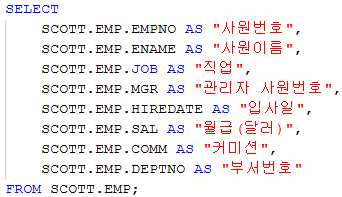
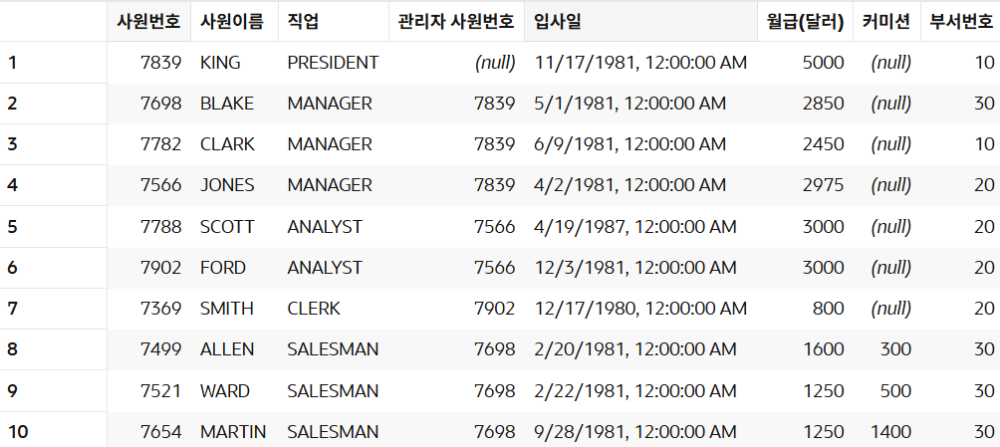
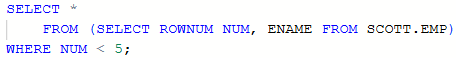
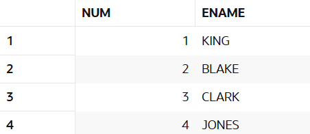

SCOTT.EMP 테이블이 다음과 같이 구성되어 있을 때 예상 문제 1 ~ 3 의 작업을 수행하는 SQL문을 작성한다.
Name Null? Type
-------- -------- ------------
EMPNO NOT NULL NUMBER(4)
ENAME VARCHAR2(10)
JOB VARCHAR2(9)
MGR NUMBER(4)
HIREDATE DATE
SAL NUMBER(7,2)
COMM NUMBER(7,2)
DEPTNO NUMBER(2)
[ SCOTT.EMP 테이블의 구성 ]
예상문제 1 - 칼럼 별칭
칼럼 별칭
별칭은 칼럼, 테이블, 서브쿼리, WHERE 절에 내가 원하는 이름(별칭, 별명)을 붙여주는 것으로 접근이 쉬워진다.
칼럼에 별칭을 붙여줄 때는 AS 키워드를 사용한다.
SQL문
직원(SCOTT.EMP) 테이블의 칼럼명을 변경 후 조회한다.

실행결과

예상문제 2 - 인라인 뷰 서브쿼리
인라인 뷰 서브쿼리
인라인 뷰(Inline View) 서브쿼리는 FROM 절에 위치하는 서브쿼리로 결과는 반드시 하나의 테이블로 리턴되어한다.
SQL문
줄 번호가 5 미만인 행을 조회한다.

실행결과

예상문제 3 - 스칼라 서브쿼리
스칼라 서브쿼리
스칼라 서브쿼리(Scalar Subquery)는 SELECT 절에 위치하며 한 레코드 당 정확히 하나의 값을 반환하는 서브쿼리이다.
즉 스칼라 서브쿼리는 단일행 또는 단일 칼럼을 반환해야 한다.